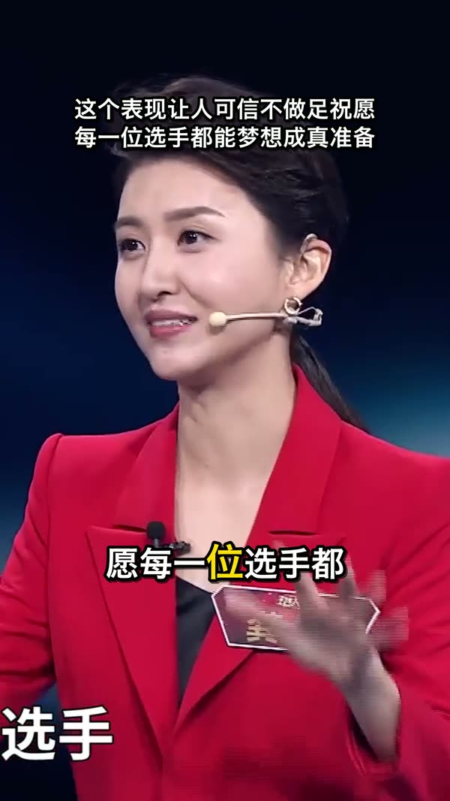

重播数据
YouTube 公开的「重播最多」曲线。视频开头永远是最高点，所以 Cutlantis 读的不是原始数值，而是相对趋势的偏离，只留下真正的高峰。
观众反复回看的片段，YouTube 早已知道。Cutlantis 读取这条曲线，听声音的起伏，分析说了什么，然后交给你可以直接发布的竖版字幕短片。
切片推广活动按播放量付费。按每 1,000 次播放 €1 计算，你的切片播放 89,000 次，就能收回 Cutlantis 的首发价（原价需 199,000 次）。之后的收入全部归你。
切片推广活动按播放量付费。按每 1,000 次播放 €1 计算，你的切片播放 89,000 次就能收回 Cutlantis 的费用。之后的收入全部归你。
这是量级估算，不是承诺。多数推广活动标价为每 1,000 次播放 1 到 5 美元，视活动和平台而定；单个切片的上限和不被认可的播放会降低实际收入。按页面显示的价格计算。
好的切片不只是精彩瞬间，而是脱离上下文也能成立的瞬间。三类信号加权组合，每个切片都会告诉你它凭什么被选中。
YouTube 公开的「重播最多」曲线。视频开头永远是最高点，所以 Cutlantis 读的不是原始数值，而是相对趋势的偏离，只留下真正的高峰。
每 50 毫秒测量一次音量与动态。强调、笑声、语调上扬，在文字读出来之前就已经写在波形里。
基于逐词转写：开场的抓力、有没有落点、数字、情绪强度。也有扣分项——以「然后呢」开头的片段，脱离上下文什么也说明不了。
创作者插入赞助广告时，很多观众会直接跳过——而且都落在同一个位置。在「重播最多」曲线上，这个落点会变成整个视频里最高的峰值之一。盲目跟随曲线的工具，会建议你把它剪成切片。
Cutlantis 会识别赞助广告段落：社区共建的 SponsorBlock 数据库、视频章节，以及结合简介阅读的逐字稿——提到的品牌、优惠码、「链接在简介里」。它绝不会从中生成切片，还会把紧随其后的假峰值从曲线上抹掉。
2026 年 9 月，基于 52 个法国大型 YouTube 频道的赞助视频测得。当 SponsorBlock 尚未收录该视频时，过滤只依靠逐字稿：17%。
在时间轴上选出起止点（「重播最多」曲线为你指路），或点击逐字稿中的一句话。剩下的交给 Cutlantis，和它推荐的切片一样处理：
七项新功能，已包含在购买中。
点击一个词即可修改，名字或品牌用“全部替换”。不确定的词会被标出。
频道一发布，Cutlantis 就自动下载、分析并准备好片段。你第一个发布。
剪掉空白、在高光处放大、开头加钩子和预告：这正是 TikTok 上留住观众的方法。
Twitch 和 Kick 的公开回放、大多数视频网站、你自己的视频和音频播客。
画面跟随正在说话的人，或上下分屏。
每个片段都有：发布文案、频道署名，以及根据内容生成的话题标签。
字体、颜色、水印和标志，保存为可复用的样式。
1080 × 1920，逐词字幕，构图、标题、音量都已按平台标准处理。以下画面直接来自被分析的视频。

视频的下载、转写和剪辑都在你的电脑上完成。不会上传任何视频，不用注册账号，也不用购买时长。
部分视频（通常是较新的）不提供这条曲线。Cutlantis 会明确提示，并改用声音和文字来判断。结果依然可用，只是少了观众数据的支撑。
三个来源：SponsorBlock，一个由观众标注赞助段落的社区数据库（匿名查询，视频不会离开你的电脑）；视频章节；以及结合简介阅读的逐字稿——提到的品牌、优惠码、「链接在简介里」。识别出的段落会在时间轴上以斜线显示。
可以：Twitch（公开回放）、Kick、大多数视频网站，以及你自己的文件（视频或音频播客）。“最常重播片段”曲线只在 YouTube 上有：其他来源时，Cutlantis 依靠声音和文字判断，手动模式也随时可用。
转写支持大多数常见语言并自动识别视频语种，包含日语和中文。开场抓力的判定规则目前针对法语和英语做了调优。
五分钟的视频：下载约二十秒，转写约一分钟，之后每导出一条约十五秒。
全部可以：精确到 0.1 秒的起止点、构图、标题、样式，以及字幕里的每一个词——点击一个词即可修改，听错的名字用“全部替换”。你也可以手动添加片段。
错误修复免费。带新功能的新版本，需要时 €15 一个；不买的话，你的版本永久可用。无订阅。
下载视频时需要。之后的转写、分析和导出都在你的电脑上完成。
搭载 Apple 芯片（M1 或更新）的 Mac，macOS 14 Sonoma 或更高版本；或 Windows 10（1809 或更新版本）/ Windows 11 的 64 位电脑。约需 3 GB 可用空间。
剪别人的视频再发布需要对方授权。切片推广活动会为其覆盖的视频提供授权；除此之外，Cutlantis 是为你自己的视频或你有权使用的视频而做的。